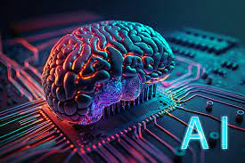
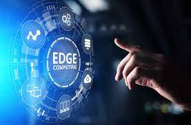

Information Technology

The Future of Artificial Intelligence in IT: Transforming Industries
Artificial Intelligence (AI) is poised to revolutionize the IT landscape, ushering in a future where industries are transformed by its capabilities. Automation stands as a cornerstone, streamlining IT tasks and boosting efficiency through AI-driven algorithms that handle routine processes, freeing up professionals to focus on strategic endeavors. Predictive analytics, another facet of AI, empowers proactive decision-making by spotting trends and potential issues before they escalate. Intelligent chatbots and virtual assistants are already enhancing user experiences by swiftly addressing queries and technical problems. In the realm of cybersecurity, AI bolsters defenses, promptly identifying anomalies and responding to threats in real time. Moreover, AI's transformative impact extends beyond IT, reshaping sectors like healthcare, retail, and finance through personalized diagnostics, optimized supply chains, and improved fraud detection. Nevertheless, as AI integrates deeper into IT and beyond, ethical considerations surrounding data privacy, bias, and job displacement come to the forefront. The path forward entails embracing AI's potential while navigating these ethical complexities, promising a future where AI and IT coalesce to drive innovation and efficiency across industries.
Cybersecurity Best Practices: Safeguarding Your Digital Assets
In today's interconnected digital landscape, safeguarding your digital assets is of paramount importance, and cybersecurity best practices serve as the cornerstone of defense. Employing robust password management is essential, involving the use of strong, unique passwords and regular updates. Multi-factor authentication adds an extra layer of protection, thwarting unauthorized access even if passwords are compromised. Regular software updates are critical, as they patch vulnerabilities that hackers could exploit. Equally significant is ongoing employee training, ensuring that individuals are well-versed in identifying phishing attempts and adhering to security protocols. As cyber threats continue to evolve, adhering to these best practices forms a robust shield against potential breaches, safeguarding sensitive information and preserving the integrity of digital assets.

Cloud Computing: Unleashing the Power of Scalable IT Infrastructure
Cloud computing has fundamentally transformed the landscape of IT infrastructure and services. This innovative paradigm offers businesses and individuals access to scalable resources, storage, and applications over the internet, eliminating the need for extensive on-premises hardware and infrastructure investments. Through the various models of Infrastructure as a Service (IaaS), Platform as a Service (PaaS), and Software as a Service (SaaS), cloud computing grants unprecedented flexibility and agility in resource allocation. It empowers businesses to scale up or down rapidly in response to changing demands, reducing costs, and enhancing operational efficiency. Data storage, processing, and collaboration are seamlessly integrated, enabling real-time collaboration and accessibility from anywhere. However, while cloud computing provides numerous benefits, considerations regarding data security, vendor selection, and regulatory compliance remain essential. As the cloud computing landscape continues to evolve, it undoubtedly reshapes how IT resources are provisioned, consumed, and managed, ushering in a new era of connectivity and efficiency.

DevOps: Bridging the Gap Between Development and Operations
DevOps is a modern software development approach that combines development and operations teams into a seamless, collaborative workflow. It emphasizes automation, continuous integration and delivery (CI/CD), and a shared responsibility for the entire software lifecycle. DevOps practices involve automating manual tasks, such as code testing and deployment, to achieve faster and more reliable software releases. By breaking down traditional silos between development and operations, DevOps promotes better communication and collaboration, enabling teams to respond rapidly to changes and deliver higher-quality software. This approach not only enhances the speed and efficiency of software development but also encourages a culture of continuous improvement and innovation.

The Rise of Edge Computing: Enhancing IT Infrastructure for IoT
Edge computing is a groundbreaking paradigm in the field of information technology that's reshaping how data is processed and analyzed. Unlike traditional centralized cloud computing, edge computing pushes computation closer to the data source, reducing latency and enabling real-time decision-making. This approach is particularly relevant in the era of the Internet of Things (IoT), where countless devices generate massive amounts of data that require instant processing. Edge computing empowers devices at the "edge" of the network, such as sensors and IoT devices, to perform data processing locally, minimizing the need to send data to a distant cloud server. This not only accelerates response times but also reduces the strain on network bandwidth. As industries continue to leverage IoT technologies, edge computing's ability to enhance efficiency, privacy, and security while enabling innovative applications makes it a transformative force in the IT landscape.